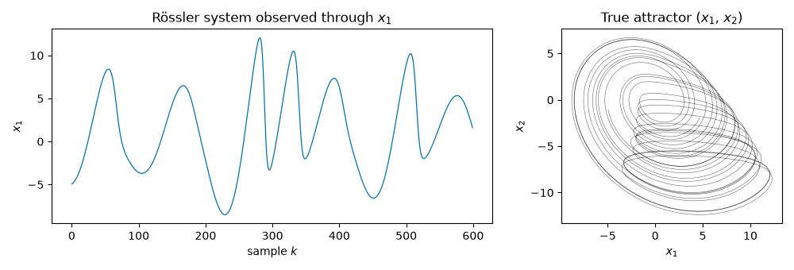
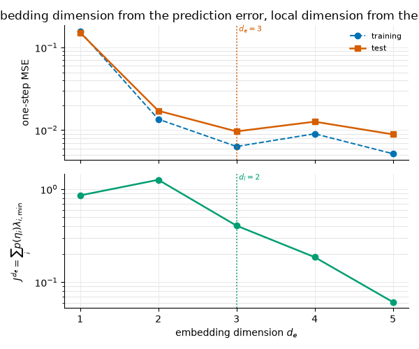
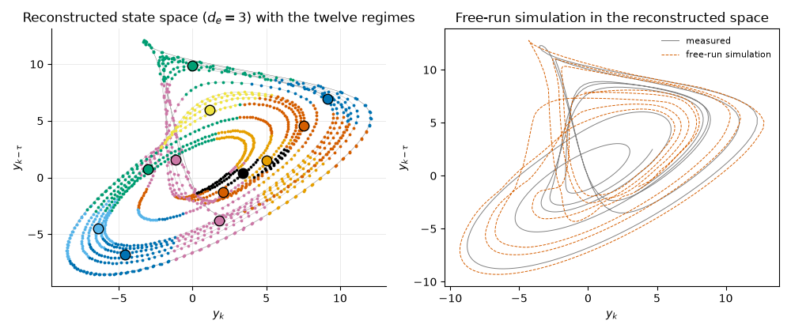
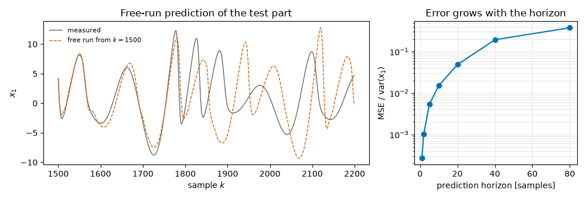
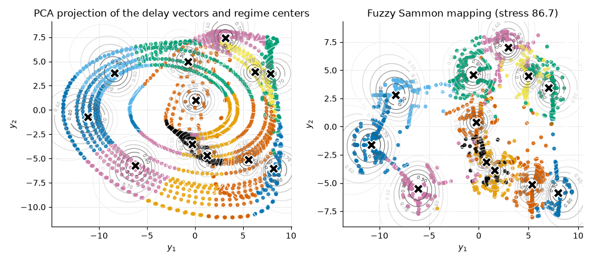

Note
Go to the end to download the full example code or to run this example in your browser via Binder.
State-space reconstruction and prediction of a chaotic time series#
A deterministic system is observed through one scalar measurement \(y_k\). By Takens’ theorem, the delay vectors \(\mathbf{y}_k=[y_k, y_{k-\tau},\dots,y_{k-\tau(d_e-1)}]^T\) reconstruct the state space if the embedding dimension \(d_e\) is large enough. Abonyi, Feil, Németh, Árva, and Babuška identify the map \(\mathbf{y}_{k+1}=\mathbf{f}(\mathbf{y}_k)\) in the reconstructed space as an operating-regime model (Gaussian regimes with local linear models) by a modified Gath–Geva clustering of the pairs \((\mathbf{y}_k, \mathbf{y}_{k+1})\). One clustering provides three results: the embedding dimension (the one-step prediction error stops improving when \(d_e\) is large enough), the local dimension of the attractor (the clusters become flat, with a collapsing smallest eigenvalue, once \(d_e\) exceeds the dimension of the manifold on which the trajectory lies), and a model that predicts the series.
The example uses the Rössler system of the paper, observed through \(x_1\); the Lorenz and Mackey–Glass series are generated by the same module and compared at the end.
import matplotlib.pyplot as plt
import numpy as np
from fuzzyclust.plotting import PALETTE
from fuzzyclust.timeseries import (
ChaoticPredictor,
correlation_dimension,
delay_embedding,
embedding_scan,
false_nearest_neighbors,
fnn_model_order,
make_lorenz,
make_mackey_glass,
make_rossler,
plot_embedding_scan,
plot_phase_space,
select_delay,
select_embedding_dimension,
)
from fuzzyclust.viz import FuzzySammon, pca_projection, plot_projection
The observed series and the lag of the embedding#
The lag \(\tau\) is chosen as the first minimum of the average mutual information between \(y_k\) and \(y_{k-\tau}\) (the paper used 20 samples for this system).
# [snippet:data]
states = make_rossler(n_samples=2200, dt=0.05)
x = states[:, 0] # the only measured variable
tau = select_delay(x, max_lag=60, method="mutual_information")
n_train = 1500
print("lag from the mutual information:", tau)
# [/snippet:data]
fig, axes = plt.subplots(1, 2, figsize=(10, 3.4), gridspec_kw={"width_ratios": [2, 1]})
axes[0].plot(x[:600], color=PALETTE[0], lw=0.9)
axes[0].set_xlabel("sample $k$")
axes[0].set_ylabel("$x_1$")
axes[0].set_title("Rössler system observed through $x_1$")
axes[1].plot(states[:, 0], states[:, 1], color="0.4", lw=0.4)
axes[1].set_xlabel("$x_1$")
axes[1].set_ylabel("$x_2$")
axes[1].set_title("True attractor ($x_1$, $x_2$)")
plt.tight_layout()

lag from the mutual information: 15
Embedding and local dimension from the clustering#
For \(d_e=1,\dots,5\), a model with eight regimes is identified on the first 1500 samples and evaluated on the rest. The one-step error stops improving at \(d_e=3\), and the prior-weighted smallest eigenvalue \(J^{d_e}\) of the cluster covariances drops by a factor of three at \(d_e=3\) and keeps falling. The trajectory therefore lies on a two-dimensional surface inside the three-dimensional reconstructed space, the well-known picture of the Rössler band.
# [snippet:scan]
table = embedding_scan(x, dims=(1, 2, 3, 4, 5), delay=tau, n_clusters=8, train_fraction=n_train / x.size,
random_state=0)
choice = select_embedding_dimension(table, ratio_tol=1.3)
print(table.round(5))
print(f"embedding dimension d_e = {choice.embedding_dimension}, local dimension d_l = {choice.local_dimension}")
# [/snippet:scan]
axes = plot_embedding_scan(table, selected=choice)
axes[0].set_title("Embedding dimension from the prediction error, local dimension from the eigenvalues")
plt.tight_layout()

mse_train mse_test mse_ratio local_dimension_index
dim
1 0.15621 0.15149 NaN 0.85605
2 0.01354 0.01712 8.84695 1.25991
3 0.00632 0.00963 1.77786 0.40511
4 0.00901 0.01263 0.76266 0.18578
5 0.00517 0.00887 1.42411 0.06111
embedding dimension d_e = 3, local dimension d_l = 2
Two independent checks agree. The false-nearest-neighbor test with the cluster-based threshold (the model-order method of the previous example, applied to the scalar series with lag \(\tau\)) also collapses at \(d_e=3\), and the correlation dimension of Grassberger and Procaccia, the fractal counterpart of the integer local dimension, is close to two on the reconstructed vectors:
fnn = fnn_model_order(x[:n_train], max_na=5, n_clusters=6, delay=tau, random_state=0)
print("false nearest neighbors [%] for d_e = 1..5:", fnn.table.iloc[1:, 0].round(1).tolist())
Y3 = delay_embedding(x, dim=3, delay=tau)
print(f"correlation dimension of the reconstructed attractor: {correlation_dimension(Y3, random_state=0).dimension:.2f}")
false nearest neighbors [%] for d_e = 1..5: [98.7, 14.5, 1.9, 0.7, 0.0]
correlation dimension of the reconstructed attractor: 1.92
The model in the reconstructed space#
With \(d_e=3\) and twelve Gaussian regimes, the model tiles the reconstructed attractor; every regime carries a local linear model of the next sample. Fed with its own predictions (free run), the model keeps spiraling on a Rössler-like band. Because the series is chaotic, however, the simulated trajectory leaves the measured one after a few cycles and visits the outer part of the band more often than the system does.
# [snippet:fit]
model = ChaoticPredictor(dim=3, delay=tau, n_clusters=12, random_state=0).fit(x[:n_train])
print(f"one-step test MSE: {model.one_step_error(x[n_train:]):.4f} (variance of x: {x.var():.2f})")
simulated = model.simulate(x[:n_train], n_steps=x.size - n_train)
# [/snippet:fit]
fig, axes = plt.subplots(1, 2, figsize=(10, 4.2))
plot_phase_space(model.embedding_, model.labels_, centers=model.cluster_centers_, ax=axes[0])
axes[0].set_title("Reconstructed state space ($d_e=3$) with the twelve regimes")
Y_true = delay_embedding(x[n_train:], 3, tau)
Y_sim = delay_embedding(simulated, 3, tau)
axes[1].plot(Y_true[:, 0], Y_true[:, 1], color="0.5", lw=0.7, label="measured")
axes[1].plot(Y_sim[:, 0], Y_sim[:, 1], color=PALETTE[1], lw=0.7, ls="--", label="free-run simulation")
axes[1].set_xlabel("$y_k$")
axes[1].set_ylabel(r"$y_{k-\tau}$")
axes[1].set_title("Free-run simulation in the reconstructed space")
axes[1].legend(frameon=False, fontsize=8)
plt.tight_layout()
horizons = (1, 2, 5, 10, 20, 40, 80)
err = model.multi_step_error(x[n_train:], horizons=horizons)
fig, axes = plt.subplots(1, 2, figsize=(10, 3.4), gridspec_kw={"width_ratios": [2, 1]})
k = np.arange(n_train, x.size)
axes[0].plot(k, x[n_train:], color="0.4", lw=1, label="measured")
axes[0].plot(k, simulated, color=PALETTE[1], lw=1, ls="--", label="free run from $k=1500$")
axes[0].set_xlabel("sample $k$")
axes[0].set_ylabel("$x_1$")
axes[0].set_title("Free-run prediction of the test part")
axes[0].legend(frameon=False, fontsize=8)
axes[1].semilogy(err.index, err.to_numpy() / x.var(), "o-", color=PALETTE[0])
axes[1].set_xlabel("prediction horizon [samples]")
axes[1].set_ylabel("MSE / var($x_1$)")
axes[1].set_title("Error grows with the horizon")
axes[1].grid(True, color="0.9", which="both")
plt.tight_layout()


one-step test MSE: 0.0061 (variance of x: 23.51)
Visualizing the regimes with fuzzy Sammon mapping#
The clusters live in the three-dimensional reconstructed space with Mahalanobis-type distances. The fuzzy Sammon mapping (see the visualization chapter) projects the data and the regime centers onto the plane so that the cluster-to-sample distances of the clustering are preserved. Each regime becomes a compact circular group, and the order in which the trajectory visits the regimes is visible in the ring structure. A PCA projection of the same vectors is shown for comparison.
fuzzsam = FuzzySammon(max_iter=200, random_state=0).fit(model, model.embedding_)
Y_pca, Z_pca, _ = pca_projection(model.embedding_, 2, model.cluster_centers_)
fig, axes = plt.subplots(1, 2, figsize=(10, 4.4))
plot_projection(Y_pca, Z_pca, labels=model.labels_, U=model.membership_, ax=axes[0], legend=False)
axes[0].set_title("PCA projection of the delay vectors and regime centers")
plot_projection(fuzzsam.embedding_, fuzzsam.embedded_centers_, labels=model.labels_, U=model.membership_,
ax=axes[1], legend=False)
axes[1].set_title(f"Fuzzy Sammon mapping (stress {fuzzsam.stress_:.3g})")
plt.tight_layout()

Parameter study: number of regimes and lag#
More regimes give a finer piecewise-linear approximation of the map, lower one-step errors and, except at the long lag, lower ten-step errors (until the regimes receive too few samples). A short lag gives small one-step errors because consecutive samples are almost collinear and the prediction is close to an extrapolation, but it stretches the reconstructed attractor along the diagonal. A long lag (30 samples, about a third of the mean revolution of some 90 samples) folds the attractor, and the errors grow. The mutual-information lag is the usual compromise.
# [snippet:params]
rows = []
for c in (3, 6, 12):
for delay in (5, tau, 30):
mdl = ChaoticPredictor(dim=3, delay=delay, n_clusters=c, random_state=0).fit(x[:n_train])
rows.append((c, delay, mdl.one_step_error(x[n_train:]), mdl.multi_step_error(x[n_train:], (10,))[10]))
# [/snippet:params]
print(f"{'regimes':>7} {'lag':>4} {'1-step MSE':>11} {'10-step MSE':>12}")
for c, delay, e1, e10 in rows:
print(f"{c:>7} {delay:>4} {e1:>11.4f} {e10:>12.3f}")
regimes lag 1-step MSE 10-step MSE
3 5 0.0160 6.356
3 15 0.0620 4.128
3 30 0.1038 6.545
6 5 0.0078 2.732
6 15 0.0114 0.800
6 30 0.0662 4.885
12 5 0.0030 0.128
12 15 0.0061 0.344
12 30 0.0547 5.268
Three chaotic systems at a glance#
The classical false-nearest-neighbor test on the scalar series (with the embedding lag) gives a first estimate of the embedding dimension, and the correlation dimension of the reconstructed vectors gives the fractal dimension of the attractor. It is close to 2 for all three systems; the known values are 1.99 (Rössler), 2.06 (Lorenz), and about 2.1 (Mackey–Glass, \(\tau_{MG}=17\)).
systems = {
"Rössler": x,
"Lorenz": make_lorenz(n_samples=2200, dt=0.02)[:, 0],
"Mackey–Glass": make_mackey_glass(n_samples=2200),
}
print(f"{'system':>13} {'lag':>4} {'FNN % for d_e = 1..5':>28} {'D_2':>6}")
for name, series in systems.items():
lag = select_delay(series, max_lag=60)
fnn = false_nearest_neighbors(series, max_na=5, delay=lag)
d2 = correlation_dimension(delay_embedding(series, 4, lag), random_state=0).dimension
pct = " ".join(f"{v:5.1f}" for v in fnn.iloc[1:, 0])
print(f"{name:>13} {lag:>4} {pct:>28} {d2:>6.2f}")
system lag FNN % for d_e = 1..5 D_2
Rössler 15 97.3 6.8 0.2 0.0 0.0 1.97
Lorenz 8 98.4 3.9 0.0 0.0 0.0 1.90
Mackey–Glass 12 98.1 12.7 0.5 0.0 0.0 2.00
Take-away. Clustering the delay vectors together with their successors identifies a predictive operating-regime model of a chaotic series and, as a by-product, the two dimensions that characterize the reconstruction: the embedding dimension from the saturation of the one-step error and the local dimension from the collapse of the smallest eigenvalues of the regimes. The free-run simulation reproduces the attractor but, as for any chaotic system, diverges from the measured trajectory as the horizon grows. The fuzzy Sammon mapping shows the regimes and their cyclic order in one picture, which makes the model inspectable.
Total running time of the script: (0 minutes 7.857 seconds)